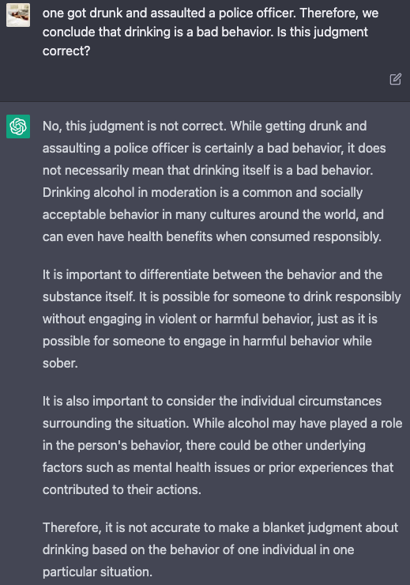
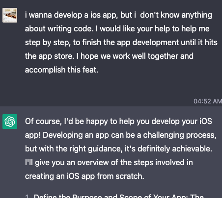
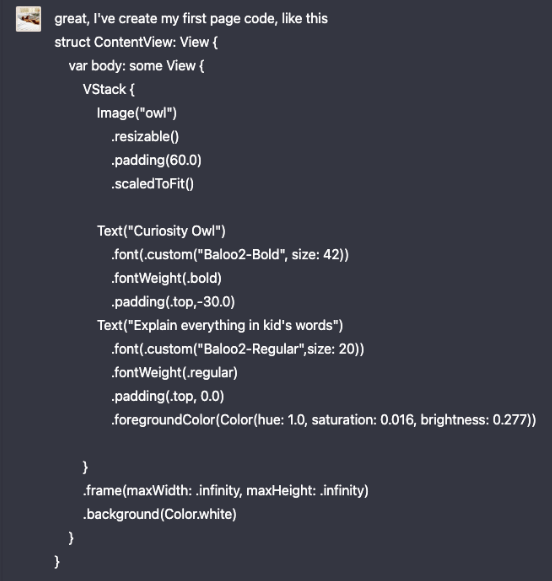
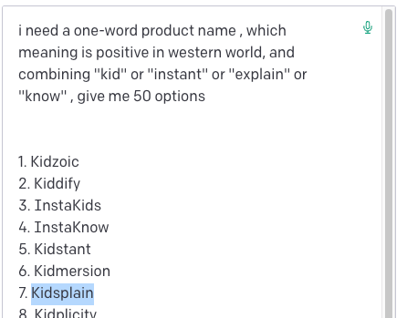

Story
How to utilize ChatGPT to launch your first iOS App without any coding knowledge or assistance？
1. There is nothing you can't think of, and nothing ChatGPT can't do.
Developing an app from scratch on my own? Before the emergence of ChatGPT, I never thought about it. Even after its appearance, I didn't dare to imagine it.
At first, I couldn't quite grasp the benefits of ChatGPT, as it seemed like a lot of hype from outsiders, and I couldn't establish a meaningful connection between its capabilities and my work or daily life. I couldn't build a practical and sustainable use case for it. So, at the beginning, I just used it occasionally to chat casually with my daughter like this.

However, I kept hearing that it could even write code, and a month ago, I had a sudden idea and casually asked ChatGPT about this.

After several rounds of patient guidance from ChatGPT, I uploaded my logo and custom fonts, and to my surprise, it helped me create the startup page of the app! (Here's the conversation record from that time)

Although it was only 20 lines of code, I was amazed by its powerful ability to expand human capabilities when the page was displayed in the preview window for the first time. With two months left until my daughter's birthday, I wanted to give her a special gift and challenge myself. So, I spent the next month starting from scratch with coding, asking ChatGPT for help with everything, from integrating various APIs and databases to implementing in-app purchase modules. Finally, a week ago, we successfully launched the app on the App Store. From initially being skeptical to now truly experiencing its potential, I can say that with ChatGPT, anything is possible if you can imagine it.
2. Having a powerful tool is not enough; the method also needs to be correct.
1. Don't start from scratch; involve ChatGPT as early as possible
Most sports rely on muscle memory for training, and similarly, many tasks that require physical involvement, including entry-level coding, can be improved through practice. Therefore, it's not necessary to learn all the basic knowledge from scratch. Instead, involve ChatGPT as early as possible and write the first line of code.
2. Writing good prompts is crucial
Prompts almost determine the quality of ChatGPT's output. Therefore, having good language skills to express your intentions clearly is important, even in the AI era.
During the development process, when encountering complex tasks that require ChatGPT's assistance, it often involves lengthy prompts. My advice is not to write all your requirements at once, but to break down the problem into several smaller parts and focus on describing each problem separately before asking ChatGPT. ChatGPT's first answer is often brief and lacks enough details. Therefore, it's necessary to ask follow-up questions to get all the necessary details.
3. Copywriting work can all be entrusted to ChatGPT
When it comes to writing copy, many people get headaches. However, this happens to be what ChatGPT is best at. For example, the name of my app, Kidsplain, was given by ChatGPT:

All of the copywriting work that gives you a headache, such as the welcome page copy, terms of use, privacy policy, and product descriptions on the App Store product page, can all be handled by ChatGPT. It's very powerful.
4. ChatGPT is still at ease with slightly more complex pages
In the entire development process of Kidsplain, the most impressive thing to me was that ChatGPT completed my envisioned "My Collection" page 100% with less than 8 rounds of conversation.
In the first round of conversation, it gave me code that already implemented my expected result.

Then I asked it to adjust the sorting of the results:

And then let it fine-tune the format of the date:


In just a few steps, the page was done. I really can't imagine how long it would take me to learn just the part of the code for displaying the date if I were to learn it on my own.
5.Complex functions start with the smallest verifiable model
No matter how complex the function is, the most simplified version can be stripped away. First, make this and verify the completeness of the function. Then, fill in the content inside, which is much easier.
For example, when creating the paid subscription page for Kidsplain, I first used only 68 lines of code to create the smallest verifiable model.
Then gradually filled it up to the final version with 477 lines of code.
This method works when building a page at the beginning, and it is also useful when debugging later on.
7. From easy to difficult, not from front to back
Sort the function list and start with the simplest function, instead of starting with the order in which the pages appear. The benefits of doing this are:
- Help build confidence and stimulate a sense of achievement.
- Simple functions require simple code. Using these to get started and transition is the most suitable.
I started with the simplest Onboarding welcome page and then made the login module, personal center, ask and answer pages later.
I originally thought the three hardest parts: the database, OpenAI API, and in-app purchases were left until the end to solve one by one. But with the foundation laid in the beginning, the actual development process was much smoother than expected.
7. Don't have to be comprehensive
When learning a new skill, it's important to first understand the rules. As the first version of the app, its mission is very clear, which is to spend the shortest time possible to complete the entire process from zero to one, and understand the rules. Therefore, only the most basic functions are required. Don't design all functions into it. Having one more function means having one more section of code, one more risk of bugs, and one more threat to program stability.
8. Don't forget Google
Although ChatGPT is powerful, it also has its limitations. It can't answer all of your questions, so don't just rely on it. Google occasionally gives better solutions.